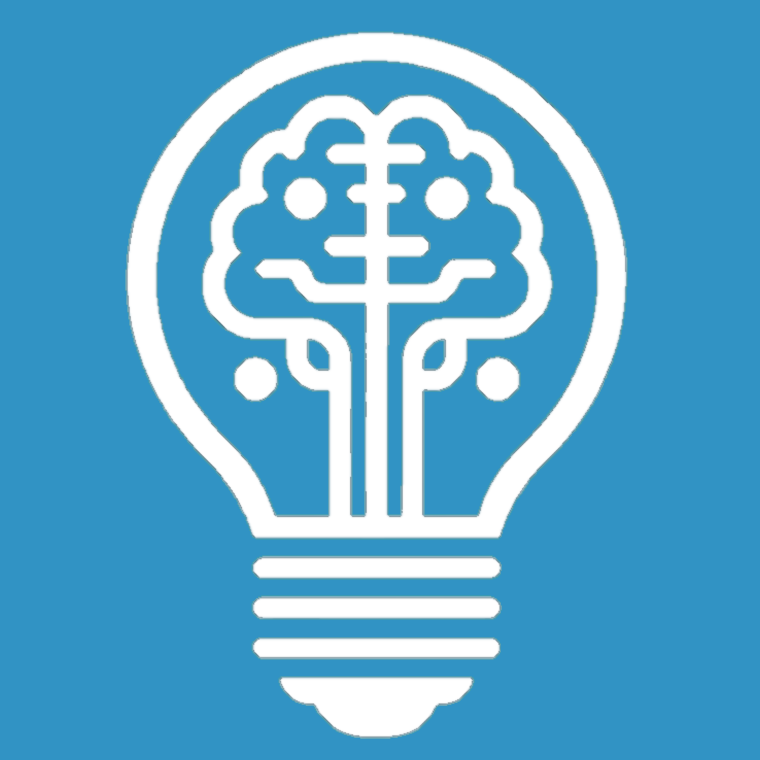

Hi there!
I'm Christoph Scheuch, an independent data science and business intelligence expert. I'm passionate about all topics surrounding finance and data.
Learn more about me and my experiences.
Get in touch to chat about opportunities to work together, mentorship requests, workshops, or speaking engagements.
Follow me on LinkedIn to get regular updates about all things data.
Let your data spark joy
Tidy
A home for tidy data science
Explore content around tidy data and modeling
Read posts →

Tidy up your data-related projects
Contact us →

Wear geek-chic swag for data nerds
Buy merch →Building blocks of tidiness
Tidy Data Helps you effectively organize domain knowledge
Tidy Programming Helps you write readable code for oneself and others
Reproducible Workflows Help you collaborate with your future self and others
Data Storytelling Helps you communicate insights to any target audience
Exploratory Modeling Helps you uncover new insights
Interactive Reporting Helps you empower your stakeholders
Working with AI tools Helps you expand your capabilities
Who is behind Tidy Intelligence?